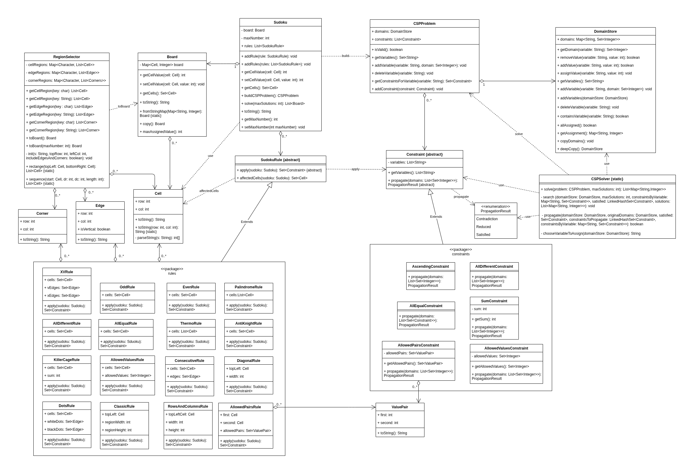

Sudoku Variant Solver 🧩
A flexible and extensible Java-based programmatic interface designed to model, configure, and solve classic Sudoku puzzles alongside their complex, non-standard custom variants.
The core framework achieves this by translating high-level Sudoku grid representations and rules into a formal Constraint Satisfaction Problem (CSP). By strictly decoupling the puzzle domain from the mathematical solver, implementing new custom variants requires zero modifications to the underlying search and propagation algorithms.
📌 Key Features
- Generic CSP Engine: A domain-agnostic solver utilizing backtracking search augmented with customizable inference and constraint propagation.
- Advanced Sudoku Modeling: A convenient sudoku setup allowing for defining the board (including using ASCII-art strings) and assigning rules to specific cells, edges, or corners.
- Architecture for Extensibility (Open-Closed Principle): By extending abstract structural foundations (
SudokuRulefor the puzzle domain andConstraintfor the CSP engine), developers can easily create custom variations.
🛠️ Tech Stack
- Language: Java
- Build System: Maven
- Testing Framework: JUnit 6 + AssertJ
- Documentation: Javadoc
⚙️ Build & Execution
This project leverages standard Maven commands. Run the following commands from the root directory to build, test, and document the project:
1. Compile
mvn compile
2. Run Unit/Integration Tests
mvn test
3. Generate documentation
mvn site
Note on Documentation: The complete project documentation is automatically built into the /docs directory at the project root:
- Project Website & Overview: Open
docs/index.htmlin any web browser to view the full site. - Code documentation (JavaDocs): Open
docs/apidocs/index.htmldirectly to browse the technical code documentation.
💡 Quick Start (Usage Example)
Configuring custom grid layouts and rule compositions has been streamlined for maximum developer experience. The snippet below demonstrates how to initialize and solve a diagonal Sudoku puzzle:
import sudokusolver.sudoku.*;
import sudokusolver.sudoku.rules.*;
import java.util.List;
public class Main {
public static void main(String[] args) {
// 1. Define the board using an intuitive ASCII-art string representation
String sudokuText = """
4.....76.
.....7.43
...8.....
6.....9..
.17...83.
..8.....2
.....3...
83.5.....
.72.....6
""";
// 2. Create a Sudoku object and add rules
Sudoku sudoku = new Sudoku(sudokuText);
sudoku.addRule(new ClassicRule(3, 3));
sudoku.addRule(new DiagonalRule(9));
// 3. Solve and display results
List<Board> solutions = sudoku.solve();
if (solutions.isEmpty()) {
System.out.println("No solutions.");
} else if (solutions.size() == 1) {
System.out.println("Single solution:");
System.out.println(solutions.get(0));
} else {
System.out.println("There are at least 2 solutions:");
for (Board solution : solutions) {
System.out.println();
System.out.println(solution);
}
}
}
}
📐 Class Structure (UML diagram)
